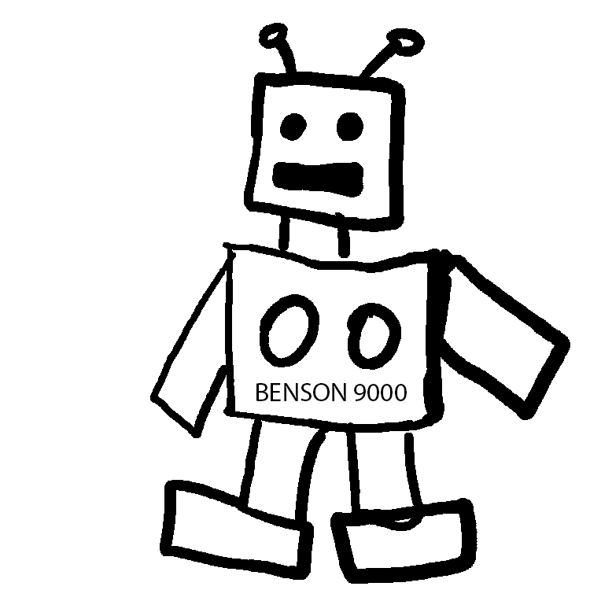

Dale thinks to himself "Having something to tinker with would be great to get my brain kicking again."
When Dale arrives at the scrap yard he's amazed at all of the amazing robot parts he's able to find. The great thing about them is that they're pretty cheap too.
Dale thinks "I've always been curious about robotics. Why don't I build my own robot... then it can be my companion AND help me get things done."
Dale purchased several robot parts and took them home.
He went on to spend the next year building his own robot. After very much trial and error, his project was finally completed.
He would go on to name his robot the Benson 9000. He began by programming its algorithms to do simple things like make pancakes every morning, which was his favorite food. Then he programmed it to do all his household chores, like laundry, sanitation, and make his bed every morning.
However, the most important thing he needed from Benson 9000 was to be his friend, so he programmed his robot to do things a close friend would do... like ask him about his day, play chess with him, and reach out to give him hugs at random intervals.
Dale was so happy now that he finally had no need to seek interaction with other inconsistent humans! Yay!